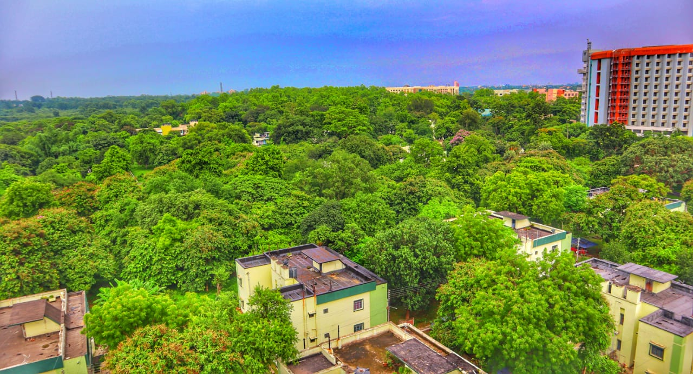
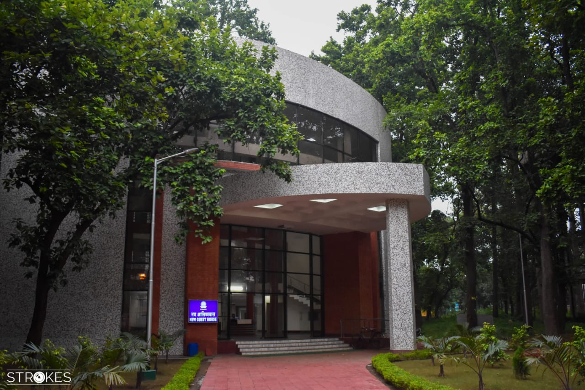
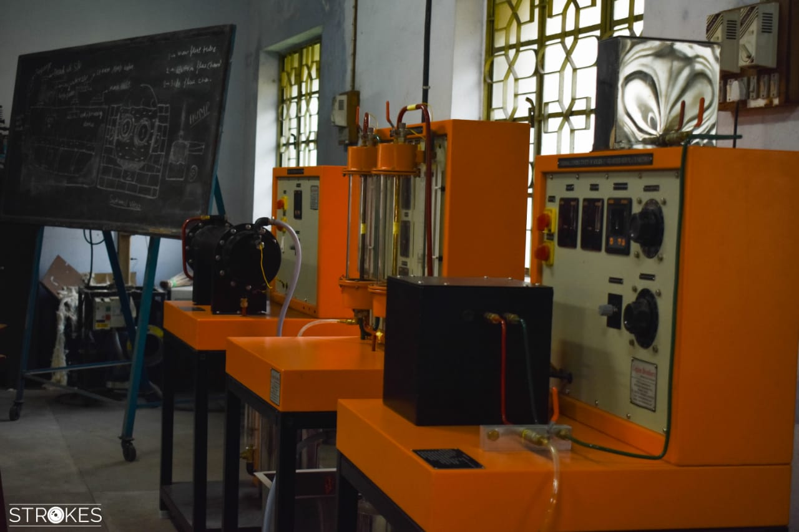
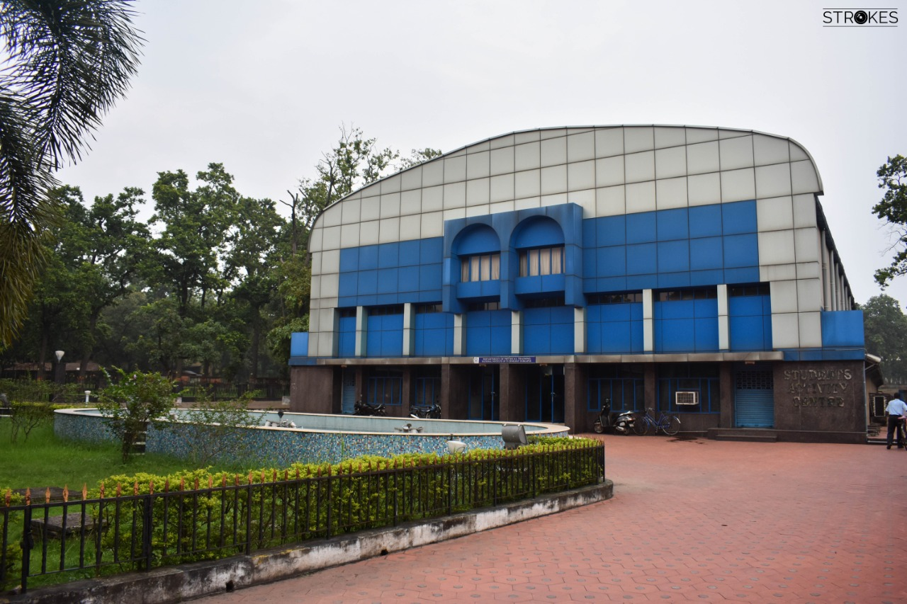
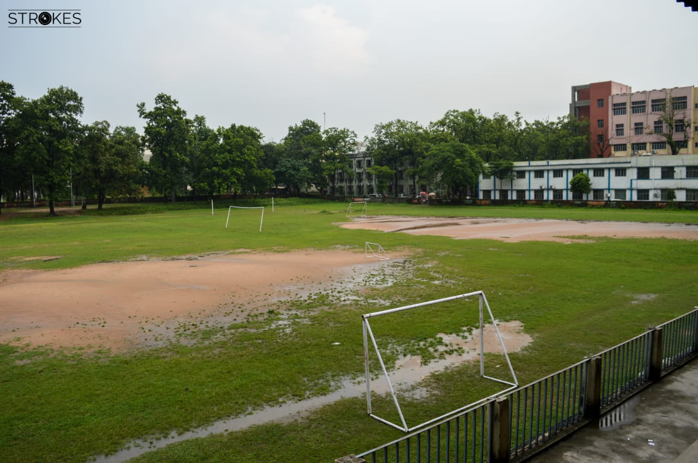
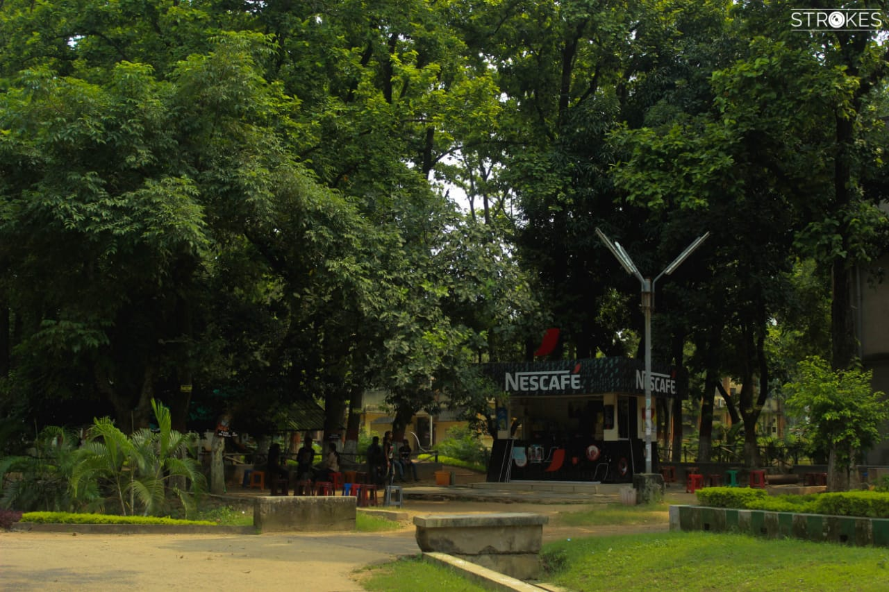
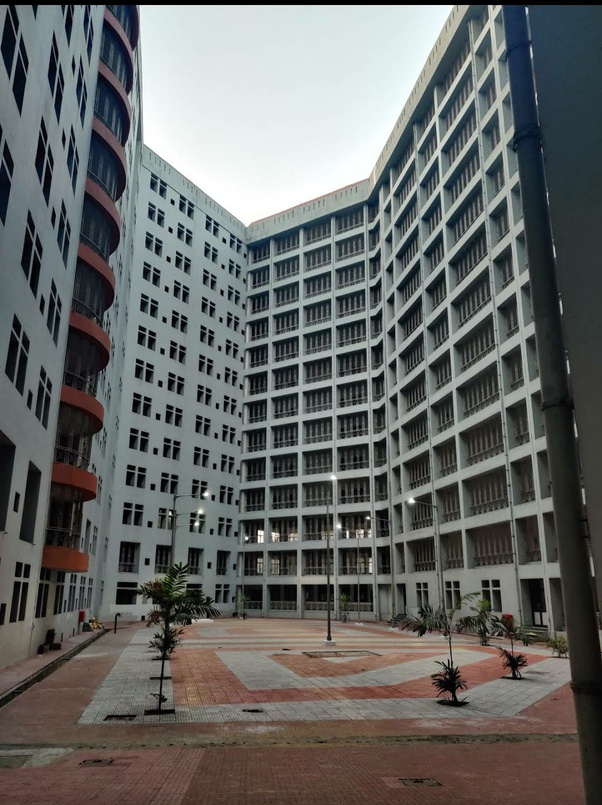
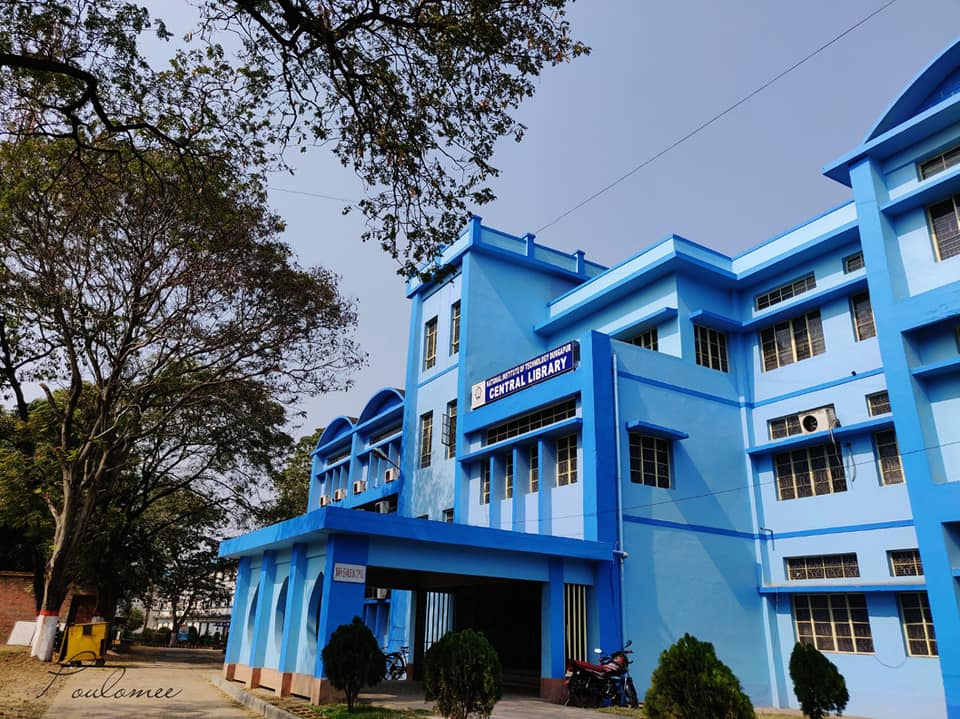

FACILITIES AND SUPPORT
187 ACRE LUSH GREEN CAMPUS
The campus of NIT Durgapur is spread over a vast area of 187 Acre, comprising of various Academic buildings, Labs, Hostels, Faculty Quarters, Playgrounds and Gardens.
GUEST HOUSE
The Institute Guest House standing beside the Director's Bungalow serves to render hospitality to the Official and Non-official guests of the Institute. It is a unique double storied building with modern living facilities overlooking a beautiful garden and tall sal trees all around. The guests of faculty members and students are also accommodated there with advanced booking as per availability.
UTKARSH BHAWAN (HEFA)
G + 10 Storied Central Research & Academic Laboratory Building.
Central Research Facility (CRF)
- Physical Characterization Facility
- Chemical Characterization Facility
- Mechanical Characterization Facility
- High Performance Computing and Storage
- Electrical and Electronics Fabrication and Characterization Facility
Centralized Laboratory Facility (CLF)
- Physics Lab
- Chemistry Lab
- Tinkering Lab
- Language Lab
- Process Control Lab
- Computation Lab
- Basic Analog and Digital Electronics Laboratory
- Basic Electrical Engg. Lab
STUDENT ACTIVITY CENTRE (SAC)
The Student Activity Centre (SAC) is treated as one of the Central Facilities of the Institute with a mission to train the students in physical activities so as to enable them to face the complex societal challenges in sound health and state of mind. Excellent facilities are available for major sports, Yoga, Martial Art, NCC and NSS. It also includes well equipped multi gymnasiums for boys and girls with separate timings.
PLAYGROUNDS AND COURTS
The institute has two playgrounds, the impressive ‘Lords’ Football stadium and the central Sports ground ‘Oval’ where all the major games are organized throughout the year including Volleyball courts with flood light facilities, concrete cricket practice pitch, concrete Basketball Court with flood light facilities, concrete tennis court with flood light facilities, concrete badminton courts with flood light facilities, Table Tennis, Chess, Yoga etc. Beside central sports facilities, most of the halls of residence are equipped with Volleyball and concrete badminton courts including Table Tennis and Carom board facilities.

.The institute has two playgrounds, the impressive ‘Lords’ Football stadium and the central Sports ground ‘Oval’ where all the major games are organized throughout the year including Volleyball courts with flood light facilities, concrete cricket practice pitch, concrete Basketball Court with flood light facilities, concrete tennis court with flood light facilities, concrete badminton courts with flood light facilities, Table Tennis, Chess, Yoga etc.
CANTEENS
Each hostel has its own canteen. Apart from those the other canteens that we have inside campus are :
- Wonder Cafe
- Nescafe
- Chandu Tea Stall
- Techno
HOSTELS AND RESIDENTIAL QUARTERS
National Institute of Technology, Durgapur is a residential Institute. There are total 13 hostels to accommodate the admitted students. All the hostels have been provided with WiFi facility to give seamless internet connectivity to the students. The most of the teachers and the staff members reside in the residential quarters provided by the Institute. A model co-educational higher secondary school has been set up for the wards of the employees of the Institute.
LIBRARY
The Library as one of the important central facilities of the Institute supports the study, teaching, research and development programmes of the Institute. It is housed in a separate building having three floors on a plinth area of 1000 Sq. metres. The library has a collection of 1.7 lakh volumes of books which includes Text Books, Reference Books and Bound volumes of Journals, Standards etc. It has a good collection of Electronic resources in its Digital Library. The library has introduced Wi-Fi Internet facility inside it to facilitate free-flow of information to the users. The library is an institutional member of DELNET, American Centre Library, Kolkata, NPTEL, and Current Science Association, Bangalore. It is also a beneficiary Member of eSodh Sindhu (eSS) initially known as INDEST-AICTE Consortium. Library is also a member of National Digital Library of India (NDLI).
MEDICAL UNIT

The Medical Unit prioritizes intensive care and attentive treatment by catering to the needs of its employees and students. It is served by three resident doctors, three Contractual doctors and other medical staff. Apart from morning and evening OPDs, there is also a provision for round the clock medical emergency services. Besides the regular doctors, specialist doctors from various domains of expertise visit the medical unit on fixed days in a week. It has observatory beds, isolation ward for students and dressing room. Moreover, the unit has an outsourced pathological blood collection and reporting system from IQ city hospital. In case of any serious illness, patients are referred to State Government Hospital, The Mission Hospital, IQ City Hospital and some other hospitals in Durgapur & also in Kolkata with which it has tie-ups. The Medical unit has a Student’s help desk for insurance for different kinds of treatments.
OTHER FACILITIES
- Campus wide Internet connectivity
- Two GPU Servers
- Three 400 kVA DG Set
- Around 82 Classrooms